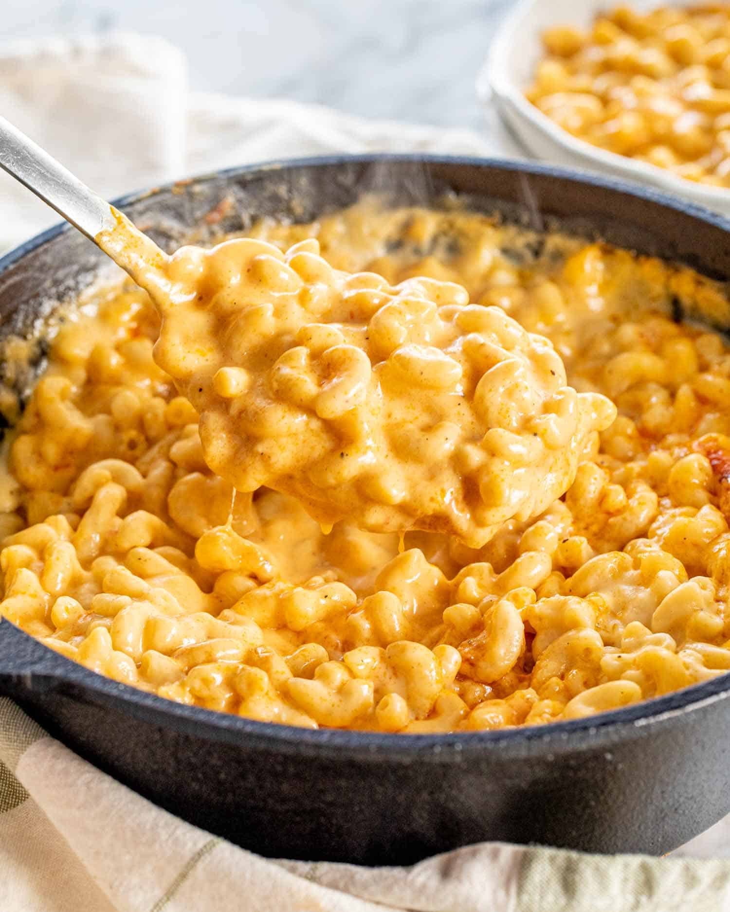

Home
Mac and Cheese

Mac and Cheese is a classic comfort food made with tender pasta coated in a rich, creamy cheese sauce. It’s simple to prepare, customizable with different cheeses or toppings, and perfect as both a main dish or a side for any meal.
Ingredients
- Elbow macaroni (or any pasta)
- Butter
- Milk
- Cheddar cheese (or a mix of cheeses)
- Salt and pepper
Steps
- Boil pasta until tender, then drain.
- In a pan, melt butter and whisk in flour to make a roux.
- Slowly add milk, stirring until smooth and thick.
- Add cheese, salt, and pepper to make a creamy sauce.
- Mix in the cooked pasta until fully coated.
- Optional: Bake with extra cheese on top for a golden crust.